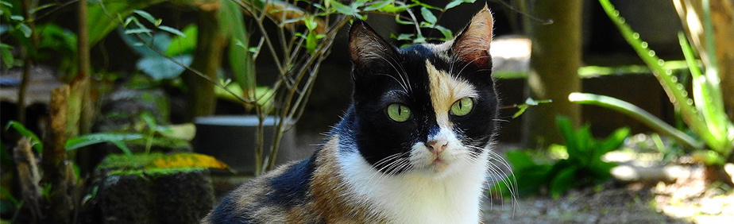
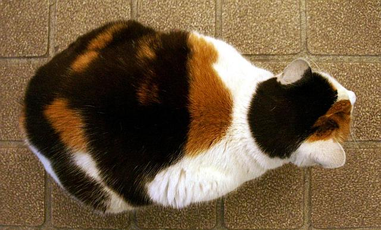

Трёхцветная кошка
Трёхцветная кошкадомашняя кошка с пятнами чёрного, белого и рыжего цветов; чёрный (пигмент эумеланин) и рыжий (пигмент феомеланин) под воздействием генов, видоизменяющих их оттенки, могут превращаться, соответственно, в голубой и кремовый, шоколадный и рыжий, лиловый и кремовый и др.
У трёхцветных кошек основным цветом является белый. Трёхцветные кошки могут иметь рисунок тэбби на цветных пятнах.
«Трёхцветная» обозначает лишь окрас шерсти и не имеет отношения к породе.
Из-за генетической связи цвета шерсти и хромосомы, определяющей пол, в подавляющем большинстве случаев трёхцветными бывают кошки, а не коты. Коты подобной расцветки встречаются крайне редко и имеют две X-хромосомы (анеуплоидия).
В других языках
Английское название — Calico cat — произошло от вида хлопчатобумажной ткани, изобретённого в Каликуте; часто этот окрас называют просто трёхцветная (англ. tricolour), а по стандарту — черепаховая с белым (англ. tortoiseshell-and-white)
В Японии такую кошку называют «микэ-нэко» (яп. 三毛猫) или просто «микэ», дословно: «трёхшёрстная кошка.
История
Историческая миграция
Так как трёхцветные кошки не являются породой, а лишь спонтанно возникающим окрасом шерсти, об этих кошках не существует исторической справки. Однако происхождение пятен с разными пигментами у трёхцветных кошек было в некоторой степени изучено Нилом Тоддом в исследовании, определяющем миграцию одомашненных кошек вдоль торговых путей в Европе и Северной Африке. По количеству кошек, имеющих «оранжевый ген», найденный у трёхцветных кошек, было выяснено их происхождение — портовые города Средиземного моря во Франции и Италии, куда эти кошки попали из Египта.
Исследования
Считается, что начало научным исследованиям трёхцветных кошек было положено в 1948 году, когда Мюррей Барр и его ассистент Е. Г. Бертрам заметили тёмные тельца в форме барабанных палочек внутри нервных клеток у кошек, но не у котов. Эти тёмные тельца стали известны как тельца Барра[10]. В 1959 году японский биолог, специализирующийся на изучении клеток, Сусуму Оно определил, что тельца Барра являются X-хромосомами[10]. В 1960 году Мэри Лайон предложила концепцию инактивации Х-хромосомы, гласящую, что одна из двух копий Х-хромосом у самок млекопитающих становится неактивной.
Генетика трёхцветных кошек
Трёхцветными бывают практически только кошки, а не коты, так как лишь X-хромосома определяет цвет шерсти и только самки имеют две X-хромосомы. Обычно коты имеют одну X-хромосому и одну Y-хромосому, поэтому практически невозможно, чтобы у кота встречались одновременно два пигмента: оранжевый феомеланин и чёрный эумеланин. Существует единственное исключение: когда, в очень редких случаях, коты имеют набор половых хромосом XXY, они могут иметь черепаховый (двухцветный) или трёхцветный окрас. Большинство таких котов стерильны вследствие аномалии, связанной с наличием двух X-хромосом.
Из всех изученных млекопитающих только у кошек и у сирийских хомячков есть ген orange — сцепленный с полом ген, влияющий на цвет шерсти. Один аллель этого гена — О — блокирует синтез эумеланина, и в шерсти образуется феомеланин; другой — о — не блокирует. В каждой клетке зародыша работает либо один, либо другой аллель (вторая Х-хромосома инактивирована). И все потомки этой клетки унаследуют это же состояние. Все меланоциты, которые произошли от клетки с активным аллелем О, будут «красить» шерсть в рыжий цвет, независимо от генотипа по гену agouti. Меланоциты с активным аллелем о будут «красить» шерсть кошки в чёрный цвет. Если в них есть ген agouti, то шерсть будет тикирована чёрным пигментом, т. е. будет покрыта поясками чёрного пигмента. Число и расположение, например, рыжих пятен зависят от того, куда распространились меланобласт с активной хромосомой ХО и насколько сильно они успели размножиться. Так что черепаховая кошка — настоящее «лоскутное одеяло», и в каждом рыжем или чёрном пятне меланоциты являются потомками одной клетки зародыша (или нескольких, если они выключили одну и ту же хромосому).
Хотя в 2010 году геном кошки был расшифрован, ген orange изучен слабо. Его полная нуклеотидная последовательность и функция его белкового продукта пока не известны.
Известно, что он скрывает действие мутантного аллеля гена agouti (а/a, nonagouti), из-за которого шерсть не имеет тикинга, окрашена меланином одного типа ровно. Поэтому на рыжем фоне у черепаховых кошек проступают полоски или пятна, независимо от того, какой они имеют генотип по гену agouti.
За белые пятна отвечает доминантная мутация другого гена, S (white spotting). Он не сцеплен с полом. У этого гена доминирование неполное: при генотипе SS пятна охватывают большую площадь, чем у гетерозигот Ss. На его проявление влияют несколько других генов-модификаторов. Скорее всего, эта мутация замедляет миграцию меланобластов. На какие-то участки тела они не успевают распространиться к моменту дифференцировки волосяных фолликулов, гибнут, и в этих участках пигмент не образуется. Белковый продукт этого гена и механизм его действия тоже пока неизвестны.
Проблема клонирования
На данный момент невозможно воспроизведение окраса при клонировании трёхцветных кошек. Согласно Энн Церноглоу, работающей в одной из ведущих компаний в сфере клонирования, «трёхцветных кошек нельзя клонировать, сохраняя их окрас. Это связано с инактивацией одной из X-хромосом. Так как все самки млекопитающих имеют две X-хромосомы, возможно, что этот феномен окажет значительное влияние на клонирование в будущем».